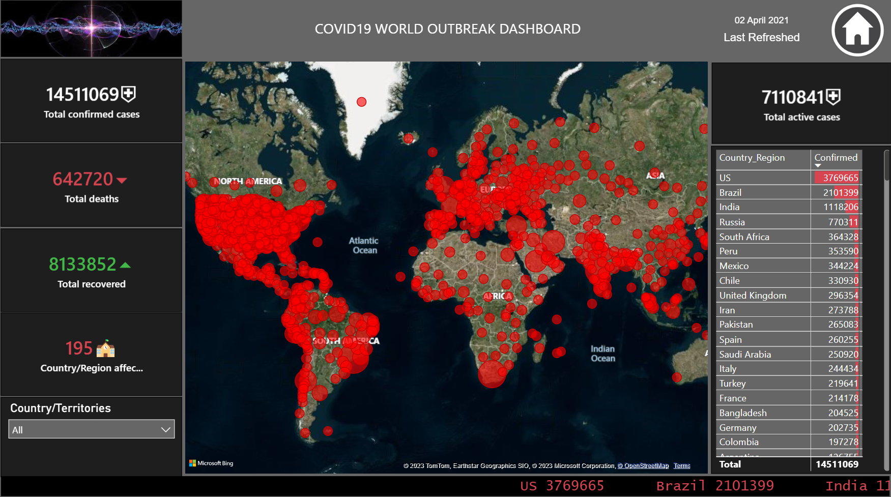

Welcome to the Global COVID-19 Impact Visualizer!
The COVID-19 pandemic has impacted the world in unprecedented ways. Stay updated on the latest statistics, trends, and insights with our interactive dashboard.
Interact with the dashboard to know everytime new things and get updated related to COVID-19 pandemic.

Stay up-to-date with accurate and reliable information through real-time data insights. The dashboard showcases the total confirmed cases, deaths, and recoveries, allowing you to grasp the scale and severity of the pandemic.
Explore the impact of COVID-19 on a country level. By selecting a specific country, you can dive deeper into its statistics, including active cases, recoveries, and more. This granular view helps you understand the local situation and trends.
Our dashboard offers intuitive geographic visualization, presenting the global impact of the pandemic on a map. Color-coded markers highlight different regions, reflecting the severity of active cases. This visual representation allows for quick and easy comprehension of the global spread.
Gain deeper insights through informative graphs that visually depict the trends and patterns of COVID-19 cases. The graphs help you identify significant changes, understand the trajectory of the pandemic, and make informed decisions.
The Global COVID-19 Impact Visualizer provides a user-friendly platform to track the global impact of the pandemic. By offering real-time insights, country-specific data, and intuitive visualizations, this dashboard empowers users to stay informed and make informed decisions. We invite you to explore the dashboard and gain valuable insights into the ongoing global crisis.
For more technical details about my project, feel free to check out my Github repository.
Your feedback matters a lot!